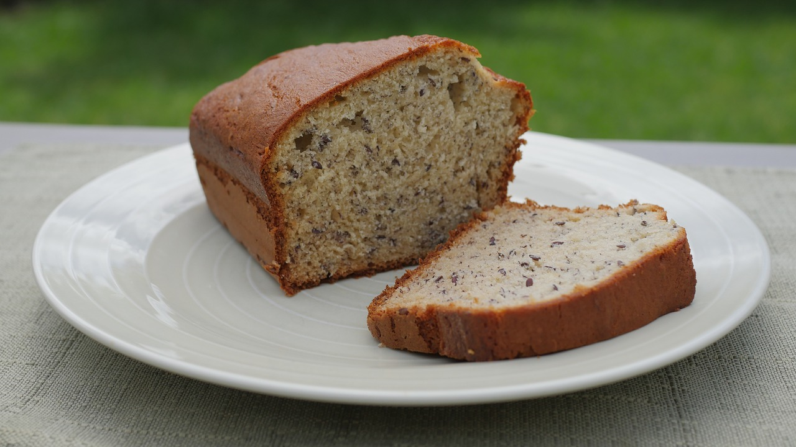

Banana Bread

Description
A simple recipe for making banana bread with common household ingredients.
Ingredients
- 1 ½ cups all-purpose flour
- 1 cup white sugar
- 1 teaspoon baking soda
- ½ teaspoon salt
- ¼ cup butter, melted
- 2 eggs, beaten
- 3 bananas, mashed
Steps
- Preheat the oven to 350 degrees F (175 degrees C). Grease and flour two 7x3-inch loaf pans.
- Whisk flour, sugar, baking soda, and salt together in a bowl. Mix in melted butter and beaten eggs, then stir in mashed bananas. Pour batter into the prepared pans.
- Bake in the preheated oven until a wooden toothpick inserted into the center comes out clean, about 1 hour.
Tips
Add nuts if desired, just stir them in when you add the mashed bananas.